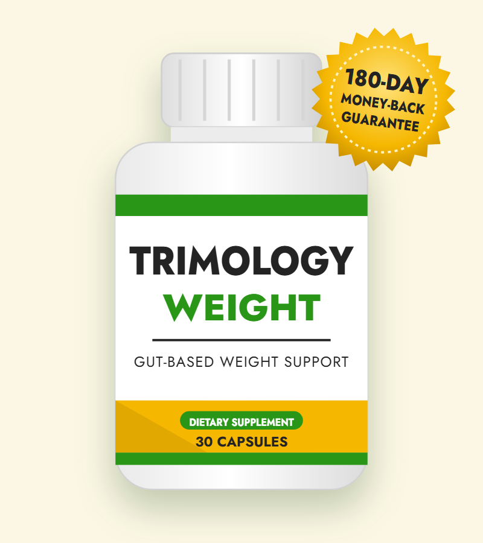
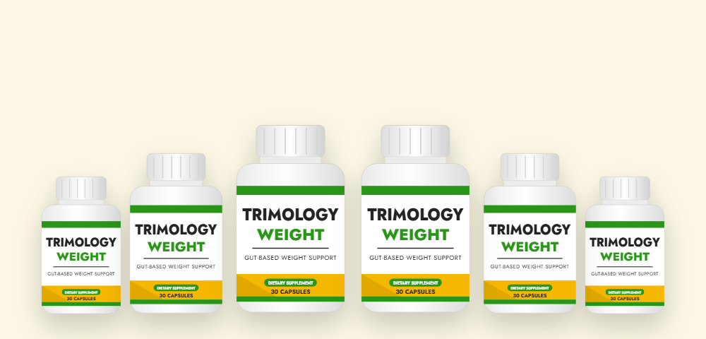

Gut-First Formula
Prebiotic fiber plus probiotics work together to support a balanced gut microbiome.*
What's inside Trimology, how it works, and where to buy Trimology at the best price

Trimology is a once-a-day capsule that supports weight management from the gut. Instead of caffeine or harsh fat burners, the Trimology supplement combines prebiotic fiber with three probiotic strains to support digestion, fullness and a healthy metabolism.*
Most weight-loss pills rely on stimulants. The Trimology supplement takes a different route: it focuses on the gut, where appetite, digestion and energy signals begin.
Prebiotic fiber plus probiotics work together to support a balanced gut microbiome.*
There's no caffeine or synthetic fat burners, so it won't keep you up at night.
No powders, shakes or meal plans — just one capsule each morning.
A full six months to try it, with a refund if it isn't right for you.
Trimology is a dietary supplement for adults who want help with weight management, cravings and bloating without stimulants. Each bottle holds 30 capsules, and you take one capsule a day. On the label you'll often see it called Trimology Weight.
The Trimology supplement is built on a simple idea: a healthy gut makes weight management easier. Your gut bacteria help digest food, produce compounds that protect the gut lining, and send signals that influence hunger and fullness. When that system is out of balance — which can happen with age, stress, antibiotics or a low-fiber diet — many people notice more bloating, stronger cravings and stubborn weight.
The formula was inspired by a traditional food: green, unripe bananas (called matoke in Uganda), which are naturally rich in resistant starch. Because green bananas ripen and lose that starch within days, Trimology uses a more stable source — resistant starch from potato — and pairs it with chicory root fiber and three probiotic strains.
It's marketed mainly to women over 35, a time when many women find that the diet and exercise habits that used to work no longer do. Men can take it too. It is a supplement, not a medicine, and it's meant to be used alongside a balanced diet and regular activity.
The formula works in three connected steps, all starting in your gut.*
Resistant starch and inulin aren't digested in the small intestine. They reach the large intestine intact, where they become food for helpful bacteria.*
As those bacteria ferment the fiber, they make butyrate — a short-chain fatty acid that fuels and protects the cells lining your gut. Clostridium butyricum adds even more.*
A balanced gut helps regulate the hormones that tell your brain you're full. Akkermansia and B. infantis are included for this role.*
In short, the formula doesn't try to force your body to burn fat. It aims to improve the environment in your gut so that digestion, appetite and energy work more smoothly. That's why most people who see results notice changes in bloating and cravings before they see changes on the scale.
Because the effect builds as your gut bacteria adjust, consistency matters more than anything. Taking one capsule every day for several months gives the formula the best chance to work.
The Trimology supplement draws on a growing field of research into the gut microbiome — the trillions of bacteria living in your digestive tract — and how it affects body weight.
Resistant starch type 2 (RS2) is found in raw potato starch and green bananas. In studies of resistant starch on its own, people have reported feeling fuller after meals and have shown improvements in markers such as insulin sensitivity. Because it isn't absorbed like regular starch, it adds very few usable calories.
When gut bacteria ferment fibers like resistant starch and inulin, they produce short-chain fatty acids, mainly butyrate. Butyrate is the main fuel for the cells lining your colon and helps keep that lining strong. Researchers are studying how butyrate may also influence inflammation and metabolism throughout the body.
Akkermansia muciniphila is one of the most studied "next-generation" probiotics; people with healthy body weight tend to have more of it in their gut. Clostridium butyricum is a butyrate-producing strain long used in Japan, and Bifidobacterium infantis is a well-known strain that supports digestion and helps with bloating.
It's important to be clear: these studies looked at the individual ingredients, not at the finished formula. The vendor states this too. The dramatic weight-loss stories in the sales video are not typical, and no supplement can promise a specific amount of weight loss.
Bottom line: the science behind these ingredients is promising, especially for gut health, cravings and bloating — but results vary and work best combined with healthy eating and activity.
Every capsule contains two prebiotic fibers and three probiotic strains. Here's what each ingredient does.
Sourced from potato starch, the same type of starch found in green bananas. It passes undigested to the colon to feed butyrate-producing bacteria.*
Chicory root is one of the richest natural sources of inulin, a soluble fiber that works alongside resistant starch to nourish the gut.*
A hardy spore-forming probiotic known as a "butyrate factory" because it produces butyrate directly in the gut.*
A gut bacterium studied for its link to healthy metabolism and body weight, and for supporting the protective mucus layer of the gut.*
A well-researched probiotic strain that supports digestion and comfort after meals.*
The Trimology supplement is free from the ingredients many weight-loss pills depend on.
The sales page does not list the exact amount of each ingredient. Check the label on your bottle for the full supplement facts.
Based on its ingredients, these are the main benefits the Trimology supplement is designed to support.*
By supporting fullness and gut balance, the formula can make it easier to stick with healthy portions and lose weight gradually.*
Fiber and probiotics support the hormones that signal fullness, which may reduce sugar cravings and late-night snacking.*
A more balanced gut often means more comfortable digestion and less of that heavy, puffy feeling after meals.*
Without caffeine spikes and crashes, many people find their energy feels more even across the day.*
Butyrate from fermented fiber and C. butyricum fuels the cells that line and protect your gut.*
Resistant starch and Akkermansia are studied for their role in insulin sensitivity and healthy metabolism.*
Using the Trimology supplement is simple. Here's how to get the most from it:
Everyone is different, but a typical timeline looks like this:
Don't take more than one capsule a day unless your doctor advises it. Store the bottle in a cool, dry place with the lid closed.
The formula is made from fibers and probiotics rather than stimulants, so it's generally gentle. The vendor reports that fewer than 1 in 200 users mention a digestive adjustment period. Here's what to know:
If you have ongoing stomach pain, diarrhea or any unusual reaction, stop taking it and contact your doctor.
According to the vendor, it's produced in small batches in an FDA-registered, GMP-certified facility in the United States and is tested for purity. Note that the FDA registers facilities; it does not approve dietary supplements.
We looked at the formula, price, guarantee and the claims in the sales video. Here's our honest take.
Trimology is a sensible option if you want a stimulant-free, gut-based supplement to support weight management — especially if bloating and cravings are part of your struggle. The ingredients make sense together, the price is in line with similar probiotic formulas, and the 180-day guarantee gives you plenty of time to decide. Expect gradual changes rather than the dramatic results in the video, and pair it with sensible eating and regular movement.
Buy Trimology from the Official WebsiteHow the Trimology supplement compares with the most common alternatives.
| Option | How it works | Typical cost | Main downside |
|---|---|---|---|
| Trimology | Prebiotic fiber + probiotics for gut-based support | $49–$79 per month | Gradual results; no trial on the full formula |
| Stimulant fat burners | Caffeine and stimulants to raise energy use | $30–$70 per month | Jitters, poor sleep, crashes |
| Prescription weight-loss injections | Medicines that mimic appetite hormones | Often hundreds of dollars per month | Needs a prescription; nausea and other side effects |
| Diet plans & meal replacements | Calorie control | $150+ per month | Hard to keep up long-term |
Prescription treatments are medically proven for weight loss; a supplement is not a substitute for them. Talk to your doctor about what's right for you.
Trimology is a real product sold through ClickBank, a large online retailer that has handled payments and refunds for digital and physical products since 1998. Here's what to know before you buy Trimology:
Each bottle is a 30-day supply. The more bottles you buy, the lower the price per bottle — and every package has the 180-day guarantee.
60-Day Supply · Starter
$79/bottle
List total $165
180-Day Supply
$49/bottle
List total $424 · about $1.63 a day
90-Day Supply · Most Popular
$59/bottle
List total $217
Prices checked October 14, 2026 and may change — the official website always shows the current Trimology price. Shipping is shown at checkout. Secure checkout processed by ClickBank.
Every Trimology order from the official website is protected by a 180-day, 100% money-back guarantee. That gives you six full months to try the Trimology supplement and see how your body responds.
If you're not happy for any reason, contact the support team within 180 days of your purchase and ask for a refund. According to the vendor, you don't even need to send the bottles back. Order and refund questions can also go to ClickBank's customer support.
This guarantee applies only to orders placed through the official website, which is another reason to buy Trimology there instead of from a third-party seller.
Try Trimology Risk-FreeThe best place to buy Trimology is the official website. It's the only place that offers the bundle prices and the 180-day money-back guarantee. Here's how to order:

Trimology is a once-daily capsule supplement for gut-based weight management. It combines two prebiotic fibers — resistant starch (RS2) from potato starch and chicory root inulin — with three probiotic strains: Clostridium butyricum, Akkermansia muciniphila and Bifidobacterium infantis. It is marketed mainly to women over 35, but adults of any gender can use it.
Each ingredient has been studied for gut health, fullness or metabolism, but the finished Trimology formula has not been tested in a published clinical trial — the vendor itself says the research is on individual ingredients. Most people who benefit notice less bloating and fewer cravings first, with weight changes coming gradually alongside a balanced diet and activity.
Yes, Trimology is a real product sold through ClickBank, a large online retailer that processes payments and refunds. Orders are one-time payments with no auto-billing and come with a 180-day money-back guarantee. Be careful with look-alike websites and marketplace sellers, which may not honor the guarantee.
Trimology contains resistant starch type 2 (RS2) from potato starch, chicory root extract (inulin), Clostridium butyricum, Akkermansia muciniphila and Bifidobacterium infantis. It contains no caffeine, stimulants or synthetic fat burners.
Because Trimology is made of fiber and probiotics, the most common side effects are temporary gas, bloating or changes in bowel habits in the first one to two weeks. People who are pregnant, nursing, immunocompromised, seriously ill or taking prescription medication should talk to a doctor before taking it.
On the official website Trimology costs $79 per bottle when you buy 2 bottles ($158), $59 per bottle for 3 bottles ($177) and $49 per bottle for 6 bottles ($294). Each bottle contains a 30-day supply.
The safest place to buy Trimology is the official website, which offers the bundle discounts and the 180-day money-back guarantee. Listings on marketplaces or look-alike websites come from third parties and may not include the guarantee.
Take one capsule each morning with water, coffee or tea. If your stomach is sensitive, take it with breakfast. Taking it at the same time every day makes it easier to stay consistent.
Gut changes take time. Many people notice less bloating and steadier appetite within the first few weeks, while changes in weight usually take two to three months or longer. The vendor recommends using it for at least 180 days.
Yes. It's marketed to women over 35, but its fiber and probiotic ingredients support gut health in men in the same way, and the vendor says men can take it too.
No. When you buy Trimology from the official website you pay once for the package you choose. There is no auto-billing or hidden subscription.
Every order from the official website is covered by a 180-day money-back guarantee. If you are not satisfied, contact the support team within 180 days for a refund; the vendor says you don't need to send the bottles back.
Get the Trimology supplement for as little as $49 per bottle with the 6-bottle package — backed by a 180-day money-back guarantee.
Buy Trimology from the Official Website